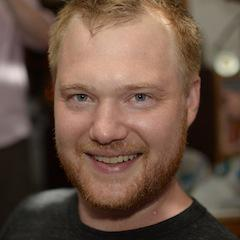

What's New and Exciting in Julia
What's New and Exciting in Julia
With the release of Julia 0.4, the language has gotten a number of goodies, including
- function call overloading: any object can be called like a function
- generated functions: a unique and powerful form of staged programming
- fast package loading: modules can be saved as compiled object files
- inline documentation: Python style docstrings in Markdown format
But we're already seeing previews of even more exciting features for the future:
- major changes to how arrays work: the release code named "Arraymaggeddon"
- experimental threading support: high performance composable concurrency
- static compilation: turn a Julia program into a standalone binary
- functions: use anonymous functions closures without sacrificing performance
- gdb-style debugger: attach to running programs, step in and out of Julia, C and C++
I'll talk about these exciting features and more, including lots of live demos, and talk about the future plans for the development of the language.
Talk objectives:
- To explain what's happened in Julia development since the last time I spoke at CodeMesh; get people excited about what we can do with some of the amazing programming language technologies that exist today, many of which are being pushed to their limits by Julia.
Target audience:
- Anyone interested in advanced programming language technologies, especially how we can blur the traditional divide between slow, high-level, dynamic languages and fast, low-level, static languages. Why can't we have our cake and eat it too?
About Stefan
Stefan is one of the co-creators of Julia and a co-founder of Julia Computing, Inc. (juliacomputing.com), which provides support, training and consulting for companies using Julia. In the past he's worked as a data scientist and software engineer at Etsy, Citrix Online, and Akamai.
Github: StefanKarpinski
Twitter: @StefanKarpinski